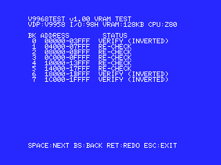
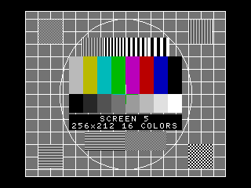
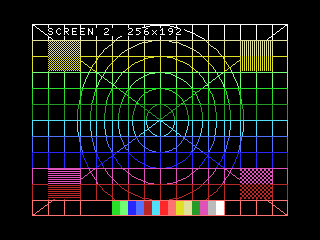
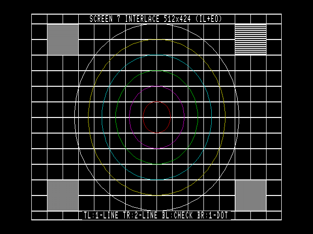
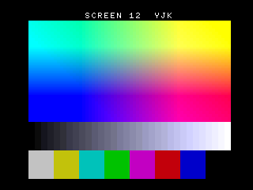
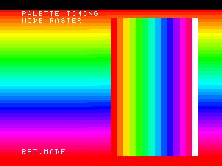

V9968 は開発中である。 この報告の内容は、2026-10-09〜10-13 ごろの FPGA で確かめたものである。「6. 実機で分かったこと」に挙げたことはもちろん、挙げていないことも、今後の FPGA の更新で直ったり変わったりすることがある。
2026-10-31 に、HRA! 氏による V9968 の公式マニュアル「V9968 MSX-VIDEO Technical Data Book」(2026.10 版、英語版もある)が公開された。V9968 の仕様は、この報告ではなくマニュアルのほうを確かめてほしい。
1. V9968 について
V9968 は HRA! 氏が FPGA(Tang Nano 20K)で作った、V9958 の上位互換の VDP である。カートリッジ版は MSX のスロットに挿して使い、絵は HDMI で出る。
- I/O は Port#0-3 が V9958 と同じで、Port#4(先頭 + 4)が新しく増えた。カートリッジの既定は 88h-8Ch で、スイッチで 98h-9Ch にもできる
- VRAM は 256KB。リセット直後は V9958 として振る舞い(VRAM 128KB、ID 2)、Port#4 で拡張レジスタのロックを外して R#21 の V58 を 0 にすると V9968 になる(ID 3)
- V9958 にない機能: 32768 色から選ぶ 256 色のパレット(EPAL)、インターレースの 424 ラインを VRAM に順に並べる FIL、1 ラインに 16 枚のスプライト(S16)、VDP コマンドの高速モード(HS)など
- 2026-10-05 の版の FPGA から、Alex Moncks 氏の 3D 補助プロセッサ Geo3D が入っている(ポートは先頭 + 5 と先頭 + 7)
参考: HRA! 氏の V9968_Cartridge、公式マニュアル V9968 MSX-VIDEO Technical Data Book(英語版、サンプルプログラム)、Alex Moncks 氏の Geo3D
2. プログラムの一覧
| ファイル | 内容 |
|---|---|
V9968TST.COM | 機能の確認: VRAM 試験と、全画面モードの表示 |
V9968TIM.COM | タイミングの確認: パレットの書き換え、ページの切り替え、走査線割り込み、速さ、R800 での VRAM の読み書き |
V9968G3D.COM | Geo3D が載っているかの確認と、回転する立方体 |
- MSX-DOS / MSX-DOS2 / Nextor で動く。確かめたのは MSX2+ 相当(openMSX)と turbo R(実機)
- 本体の VDP(98h の V9938 / V9958)でも、V9968 の機能を除いて動く
- 起動時と終了時に、本体の画面(DOS)に VDP の種類・I/O・VRAM 容量・CPU と結果を出す。88h のときは本体の VDP に触らない
V9968TST [/8] [/9] [/R] V9968TIM [/8] [/9] [/R] V9968G3D [/8] [/9] [/R]
| オプション | 意味 |
|---|---|
| なし | 88h に VDP があれば 88h、なければ 98h を使う |
/8 | 88h を使う |
/9 | 98h を使う |
/R | turbo R で R800 のまま動かす。指定しなければ Z80 に切り替えて、終わったら元に戻す |
3. V9968TST(機能の確認)
最初に VRAM 試験、そのあと SCREEN 0 から SCREEN 12 までの全画面モードを 1 枚ずつ出す。SPACE で次、BS で前、RETURN でもう一度、ESC で終わり。
3.1 VRAM 試験
VRAM 全体(V9968 は 256KB、V9938 / V9958 は 128KB)を 16KB のバンク単位で調べる。
- 書く値は、乱数の並べ替え表を行とバンクごとにずらして引いたもの。どのアドレス線が切れていても、ほかの線とつながっていても、違う値になるようにした
- 乱数のパターンとその反転の 2 回で、全ビットの 0 と 1 を確かめる
- 「全部書いてから全部読む」ので、アドレス線の不良で別のバンクに重なっていると分かる。文字の画面を置くバンクも途中で移して、そこも調べる
- 結果はバンクごとに
OKか、誤りのあったビットと数。最初の誤りのアドレスと、書いた値・読んだ値も出す
画面に絵を出すだけでは、使っていない領域や、128KB から先が 0 番地の写しになっているような不良に気付けない。それで、試験は表示とは別にした。

3.2 画面
| モード | 内容 |
|---|---|
| SCREEN 0(40 / 80 桁)、1、3 | 桁の目盛り、外周の枠、256 文字、1 ドットの模様、16 色、ブリンク |
| SCREEN 2 / 4 | 格子・同心円・対角線、16 色のバー、スプライト(1 ラインに 9 個並べて 8 個だけ見える) |
| SCREEN 5 / 6 / 7 / 8 | テストカード(カラーバー、階調、解像度、円、格子)と幾何パターン |
| SCREEN 7 インターレース | 512x424。左上に片方のフィールドだけの横じま |
| SCREEN 7 + FIL | 同じ絵を、VRAM に 424 ラインが順に並ぶ形で(V9968 のみ) |
| SCREEN 8 / 8 + EPAL | 256 色の表 / 32768 色から 256 色(V9968 のみ) |
| SCREEN 10 / 11 / 12 | YJK の色の平面、Y の階調、カラーバー(V9958 以降) |
- 円は、MSX の 256 ドットのモードの画素の縦横比(8:7)で丸く見えるように描いた
- SCREEN 5-8 の絵は VDP コマンド(HMMV / LMMV / LINE / LMMC、XOR と TIMP)で描くので、コマンドの確認にもなる
- V9968 では、SCREEN 5-8 を VRAM の上半分などのページに描いて表示する。128KB から先が本当に使えるかも見える




4. V9968TIM(タイミングの確認)
動画の再生やラスター処理のような「表示に合わせてレジスタを書く」使い方を想定して、反映のタイミングと速さを測る。CPU の速さで結果が変わるので、Z80(既定)と R800(/R)の両方で見るとよい。SPACE で次のテスト、RETURN でモード切り替え、↑↓ で調整。
| # | テスト | 見方 |
|---|---|---|
| 1 | パレットのラスター(SCREEN 5) | 毎ライン、水平帰線の始まりでパレット 0 を書き換える。色の変わり目の位置とゆれを見る。表示中に書き続けて点(snow)が出ないかも見られる。V9968 は EPAL でも |
| 2 | ページ切り替えのタイミング | 毎フレーム、垂直帰線の始まり + N ラインで「これから出すページの色 = 灰色、今のページの色 = 赤」をパレットに書いてから R#2 を切り替える。灰色なら間に合っている |
| 3 | 走査線割り込みでの分割 | R#19 のラインで縦スクロールとパレットを変える |
| 4 | 速さ | 1 フレームと垂直帰線のライン数、パレット 32 バイト、EPAL 768 バイト、VRAM 16KB の読み書き、SCREEN 8 の VDP コマンド(V9968 は通常 / 高速) |
| 5 | CPU からの VRAM アクセス(turbo R のみ) | 「R800 で書いて Z80 で読む」と「Z80 で書いて R800 で読む」に分けて、誤りの数を数える。v1.01 では、同じ所を Z80 で 2 回続けて読み、VRAM に違う値が入っている(書き込みの誤り)のか、読むときだけ違う(読み出しの誤り)のかも分けて数える |

5. V9968G3D(Geo3D の確認)
Geo3D は、頂点の座標変換と透視の計算をして、VDP の LINE コマンドで線を引いたり面を塗ったりする補助プロセッサである。結果は DOS の画面に出す。
- 状態のポートを読む。FFh なら Geo3D がない(古い FPGA)ので終わる。あれば版を出す(v1.01。番号 49h が 20h なら v2.0、FFh なら v1.0.0)
- レジスタに値を書いて読み返す
- 頂点 1 つの計算を 10 通り(中心、回転、移動、512x424、手前すぎ、あふれ、画面外など)させて、前もって計算した答えと比べる。答えは作者の検証用モデルとも一致を確かめてある
- 全部合えば、キーを押すと V9968 の画面に回転する立方体を描かせる。終わると最初のフレームの描いた線の数(12 / 0 / 0 のはず)、フレーム数、時間、平均のフレームレートを出す
Geo3D からの読み出しも VDP と同じく後からデータを返す作りなので、既定の Z80 で動かす(/R は付けない)。
2026-10-24 の FPGA から、R#20 の HS が 0 のときの VDP コマンドは従来の VDP くらいの速さになった(SCREEN 8 の HMMV 256x212 が 50 → 1631 ライン)。Geo3D も VDP コマンドで線を引くので、HS を立てない v1.00 では立方体が 15fps に落ちた。v1.01 は立方体を描く間だけ HS を立てるので、この FPGA(Geo3D v2.0)でも 59.9fps で描ける。
6. 実機で分かったこと
turbo R、MSX-DOS2、V9968 カートリッジ(I/O 88h)で、2026-10-09〜10-13 ごろの FPGA で試した。機能(全画面モード、VRAM 256KB、EPAL、インターレース / FIL、VDP コマンド)はどれも問題なく動いた。そのうえで気付いたことを挙げる。
6.1 測った値
| 項目(ライン数、1 ライン 約 64µs) | Z80 | R800 |
|---|---|---|
| 1 フレーム / 垂直帰線 | 262 / 51 | 262 / 51 |
| パレット 32 バイト | 5 | 1 |
| EPAL 768 バイト | 81 | 22 |
| VRAM 書き込み 16KB | 1715 | 479 |
| SCREEN 8 256x212 の HMMV / LMMV / HMMM / LMMM | 50 / 154 / 133 / 225 | 同じ |
6.2 気付いたこと
- R#2(表示ページ)はすぐ効く: 表示の途中で書いても、その場から切り替わる(V9938 / V9958 と同じ扱い)。パレット 4 バイトなら垂直帰線の始まりから 49 ラインまでに書けば間に合う。EPAL の 768 バイトは Z80 では 81 ラインかかって帰線(51 ライン)に収まらないので、毎フレーム 256 色を入れ替えるなら R800 が要る
- R800 では VRAM の読み出しが化ける: R800 で Port#0 から VRAM を読むと、16KB あたり数十個の誤りが出る(書き込みは R800 でも誤り 0、Z80 なら読み書きとも 0)。誤りはどれも 0 のビットが 1 になり(85h が 87h など)、1 バイトごとに待ちを入れても減らない。turbo R は 98h の VDP には R800 でも待ちを入れるが 88h には入れないこと、FPGA 側が読まれてから VRAM を読みに行く作り(先読みがない)であることから、R800 の短い IN の間にデータが出揃っていないと考えられる。R800 で動かすソフトで VRAM を読む必要があるときは、読む間だけ一時的に Z80 に切り替えるのがよい(VRAM を読まない作りにして避ける手もある)
- S#1 の FH: R#0 の IE1 が 0 でも立つので、割り込みを使わずに走査線の位置を待てる
- インターレースの HDMI 出力: 2 つのフィールドを合成せず、フィールドごとに片方のラインだけを光らせる。CRT と同じく、片方のフィールドにしかない 1 ラインの横線は 30Hz でちらつく。HDMI の絵には走査線のような縞が常に入る
- 1 ラインに 16 枚のスプライト(S16): ドラゴンクエストII のパッチを V9968 に対応させたときに、スプライトの表に終わりの印がなく 32 枚すべてを調べる場合に、一部のスプライトが出ないことがあった。専用のテストプログラムで、実機で再現した
- Geo3D: 2026-10-05 の版の FPGA にはすでに入っていた。回転する立方体は、描いた線 12 / 0 / 0、平均 59.9fps(NTSC のフレームごとに 1 枚、取りこぼしなし)で描けた
7. 確かめた環境
| 対象 | 確かめた環境 |
|---|---|
| 全画面、VRAM 試験、V9968TIM のテスト 1-4 | openMSX(Panasonic FS-A1ST、本体の V9958 を 98h で) |
| V9968 の機能(88h、256KB、EPAL、FIL、HS)、テスト 5 | 実機: turbo R + V9968 カートリッジ(88h) |
| V9968G3D | 実機: turbo R + V9968 カートリッジ(88h)。Geo3D がない場合は openMSX |
表で openMSX と書いたのは、ふつうの openMSX(V9968 も Geo3D もない)である。そのため、V9968 だけの処理は実機でしか確かめていない。
V9968 を真似できる openMSX もある。buppu3 氏の派生版(v9968 ブランチ、マシン C-BIOS_V9968_JP)で、Geo3D はそれを元にした Alex Moncks 氏の派生版(geo3d-v2.0 ブランチ、拡張 geo3d / geo3d88)に入っている。どちらも配布されているビルドはなく、ソースから自分でビルドして使う。この 3 本はまだこれらでは試していない(C-BIOS_V9968_JP では V9968 が本体の VDP として 98h にあるので、/9 を付けて動かすことになる)。
8. V9968 に対応したほかのソフト
- MCPLAYER(マイクロキャビンのゲームの曲を、ゲームのディスクから鳴らすプレイヤー): I/O 88h の VDP(V9968 カートリッジなど)があると、ゲームの絵(CG)はそちらに出し、本体の画面は曲の一覧だけにする。MSX1 でも CG を見られる。→ MCPLAYER
- ドラゴンクエストII スクロール改善パッチ(MSX2 版): 起動時に VDP を判定し、V9938 / V9958 / V9968 カートリッジ / V9968 内蔵の機種に ROM 1 本で対応する。V9968 では 1 ラインに 8 人まで点滅せずに出し、カートリッジにゲームを出している間、本体の画面に案内を出す。ゲームもパッチも VRAM を読まないので、R800 でも使える。→ ドラクエ スクロール改善パッチ